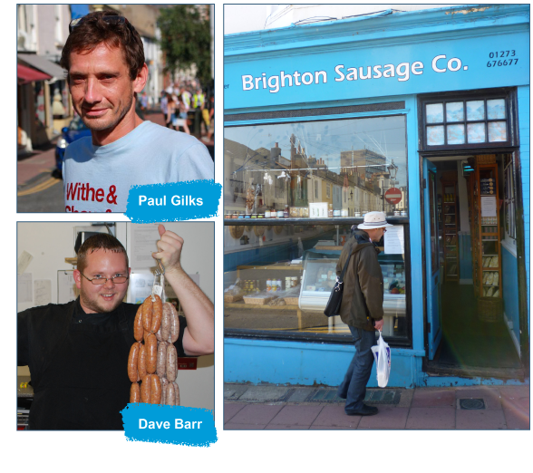

Brighton Sausage co. was started in 2006
by Paul Gilks and David Barr who met some years earlier whilst working in another small food shop in hove.
Armed with a love of sausages and a wealth of food sales experience, they noticed that the popular North Laine area had an abundance of cafes and eateries but was lacking proper food shops that offer an alternative to supermarket chains.…
So Brighton Sausage Co was born, with the intention to offer quality produce at a reasonable price, all provided with a dollop of old fashioned personal service.
